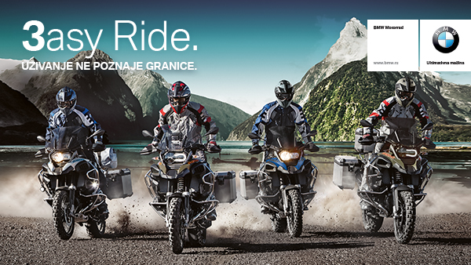

| 40 GODINA BEZ PREMCA. BMW SERIJA 3. |
|---|
Tokom poslednjih 40 godina i sest generacija modela Serije 3, BMW je postavio standard savremenih sportskih limuzina, posebnim dizajnom, sportskom agilnoscu, efikasnoscu i komforom, stvarajuci jaku emocionalnu vezu izmedu sportskog iskustva voznje i nenadmasne svakodnevne prakticnosti. Ove cinjenice potvrduju preko 12 miliona prodatih automobila sirom sveta do sada. U cast cetiri decenije od lansiranja prve generacije serije 3, pozivamo vas da posetite izlozbu "40 godina bez premca", na kojoj ce biti izlozeno svih sest generacija najprodavanijeg BMW-ovog modela. Izlozba ce trajati od 12. do 19. septembra (izuzev nedelje) ispred Delta Motors BMW salona u Radnickoj 8 u Beogradu, od 9 do 19 casova. |
| ___________________________________________________________ |
| UZIVANJE NE POZNAJE GRANICE. |
|  |
Priuštite sebi BMW motocikl na najlaksi nacin putem prodajne akcije 3asy Ride.
Vozite motocikl 3 godine i nakon tog perioda na raspolaganju su vam tri opcije:
|
| ___________________________________________________________ |
| MEDJUNARODNI SALON AUTOMOBILA. |
Delta Motors je na ovogodisnjem 52. Medjunarodnom sajmu automobila u Beogradu,
koji se odrzao u periodu od 20. do 29. marta 2015. godine, u Hali 1 predstavio 12
BMW i MINI modela.
|